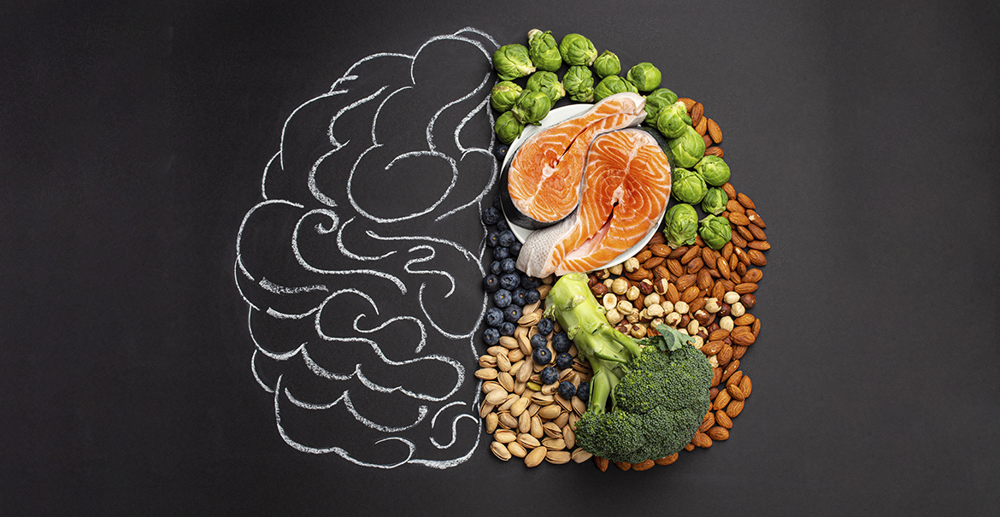

Una alimentación equilibrada es clave para mantener un cuerpo saludable y prevenir enfermedades. Proporciona la energía y los nutrientes que necesitamos para nuestras actividades diarias y para el correcto funcionamiento de nuestro organismo.
Un plato equilibrado debería contener:

Adoptar hábitos alimenticios saludables es un proceso gradual. Escucha a tu cuerpo, disfruta de los alimentos que consumes y sé constante en tus elecciones saludables.
¡Tu cuerpo te lo agradecerá!